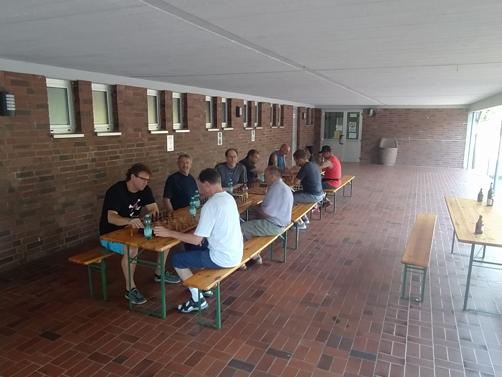

Neuigkeiten aus dem Verein
Sommerfest
Am Samstag den 08.07.2023 hat unser Verein sein jährliches Sommerfest begangen. Es wurde gegrillt und die ein oder andere Figur in Zeitnot eingestellt.
Bei dem guten Wetter haben wir prompt die Schachbretter genommen und sind nach draußen in den Hinterhof. Gespielt wurden sieben Runden nach Schweizer System mit einer Rundenzeit von
10 Minuten plus 5 Sekunden pro Zug. Mit 6 aus 7 gewonnen Partien und einem gutem Vorsprung von anderthalb Punkten gegenüber dem Zweitplatzierten wurde dieses Jahr Jörg Klein überzeugend Sieger des Turniers. Der Titelverteidiger des letzten Jahres war
Dominikus Heckmann.
Die Atmosphäre war heiter und wir freuen uns bereits auf das nächste Jahr!